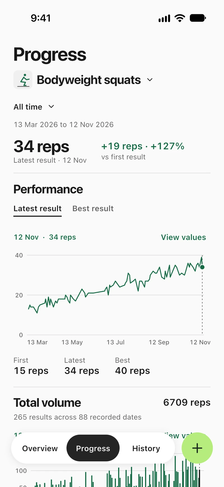
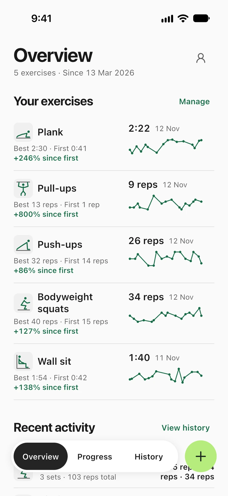
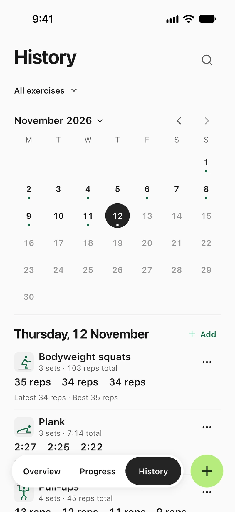
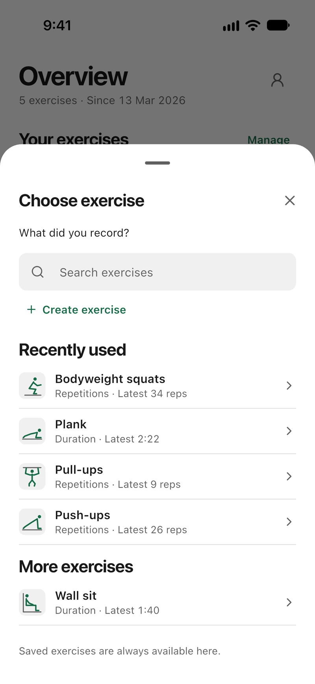

Fitness Tracker
An offline workout log for reps, weights, and timed sets.




Screenshots show sample workouts.
An offline workout log for reps, weights, and timed sets.




Screenshots show sample workouts.